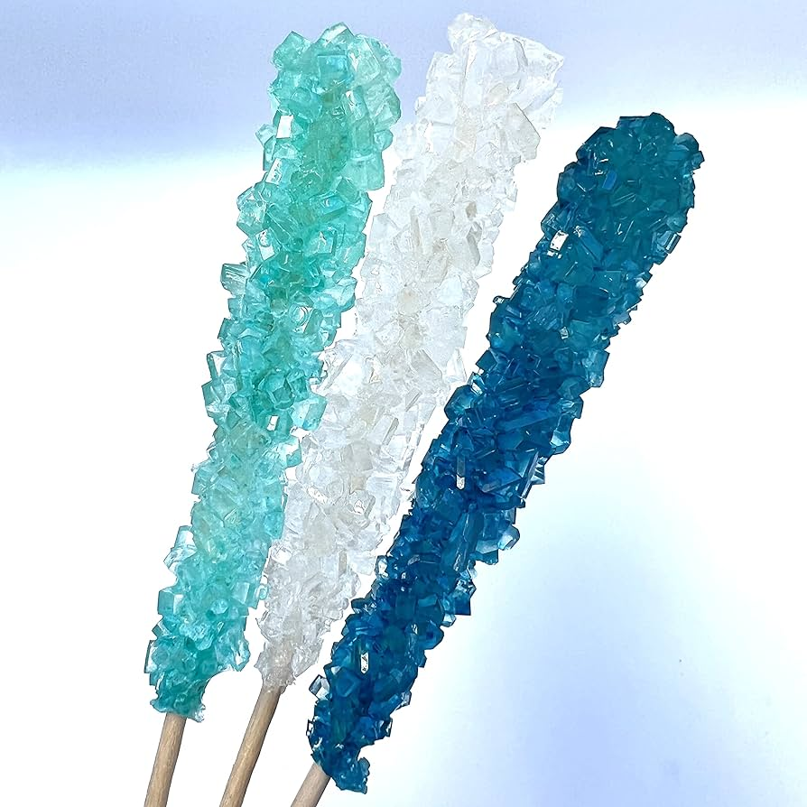

Rock Candy

Description
Rock candy is easy to make at home, it tastes great, and it's a fun
recipe to do with kids. Better yet, it doubles as a science
experiment because you get to watch the sugar crystals grow. It's
also an excellent opportunity to get creative in the kitchen
because the color and flavoring combinations you can create are
endless.
Ingredients
- 6 cups sugar
- 2 cups water
- 2-3 drops food coloring
- 1/2-1 tsp flavoring extract
Steps
- Sprinkle plate with granulated sugar, dip skewers in water,
and roll in sugar
- Bring water to boil, add sugar, and stir to dissolve
- Add food coloring and flavoring extract
- Let cool for 20-30 minutes
- Pour syrup into jars
- Lower skewers into jar
- Allow rock candy to grow to desired size
- Remove rock candy and let dry for 1-2 hours